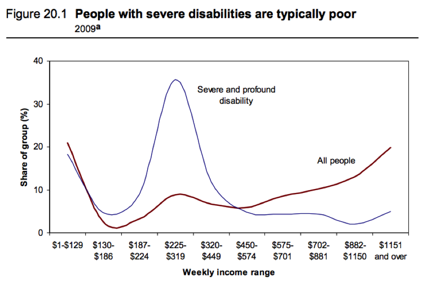
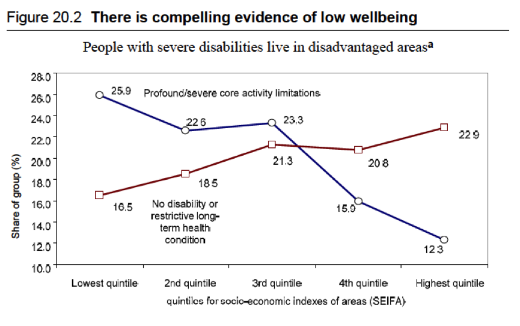
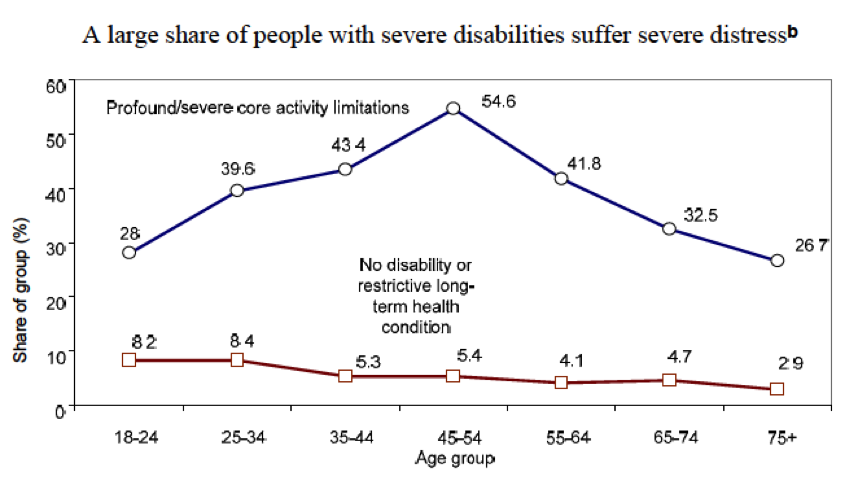
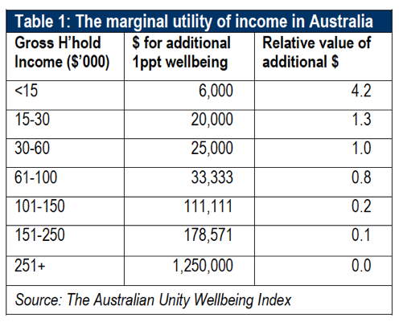

I don't stay on top of many of the latest issues. After all, they're complicated, time is limited, so I'll just satisfy myself with starting, largely ideological reactions (and of course not opine too strongly given my state of ignorance) about any number of public issues. Is climate change real? Buggered if I know but it would take a long time to come to a better view than I have now which is that it may be a disciplinary bubble of self-righteousness. It's happened before. But given the preponderance of apparently reasonable people who know vastly more than me, it probably isn't and given even a small chance that they're right, we should do something. There! Job done. I can get on with something else. Anyway, I always approved of the National Disability Insurance Scheme (NDIS) on similar grounds. Since the 'marginalist revolution' from 1870s on, ours has been a discipline based on the metaphysical notion that it's good to satisfy human wants and that urgent, deeply felt wants are more important than whether I drive a Holden or a Ferrari. And apart from the technocratic notion of the diminishing marginal utility of money, there is our Christian heritage. I was hungry and you fed me - that kind of thing. There. Job done. Slam dunk really. The NDIS is a Good Thing. And if it's not fully funded, and if its costs blow out and if it has its share of snafus (all of which I expect are more likely than not), we'll cope with them, like we cope with falling iron ore prices and with farcically designed VET Fee HELP schemes and the like. Anyway, the Australian Centre for Social Innovation has been getting involved in some work for the National Disability Insurance Agency. So I spent last weekend reading the Productivity Commission's report that gave rise to the scheme. And it's a marvellous document. It seems like a well thought out scheme though as I've said above, it will have its share of snafus - these schemes usually do. We're trying to set something up which by rights would take ten years, in about three. But it's a great national crusade to make the world a better place. And it's the old story. With economists being probably the most important profession in tackling slavery, so here it's economists who managed to snaffle for themselves the prestige to propose something as audacious as this - and everyone went along with it. Equity and efficiency together - what's there not to like? The report's overview begins "Current disability support arrangements are inequitable, underfunded, fragmented, and inefficient". It might have added "and those are its good points". Anyway, the basic architecture is this
- A lot more funding - rather than gross underfunding
- Much more choice for users and their agents - rather than producer domination
- The financial 'brain' of the system being actuarial calculation of future assets and liabilities rather than pay as you go on the fly with poor practices racking up huge future liabilities by exacerbating rather than improving disabilities.
- National policy architecture and integration with other systems (as best can be managed) rather than the ad hoc patchwork of state systems we've had.
- A structure that is trialled before being rolled out more widely.
Whatever happens, hats off to the heroes who masterminded it as a political and bureaucratic campaign. Quiet achiever of the Hawke/Keating Governments, probably the person who's done more good in the country in my lifetime - the quiet achiever - "no child need live in povery" - Brian Howe. Bruce Bonyhady led a bunch of other worthies on a campaign starting about ten years ago. The activists had the vision from the start - of an insurance based national scheme and now we'll look after disabled people a whole lot better. Bill Shorten also deserves a lot of kudos. He championed the issue and apparently helped out even when his ministerial responsibility for it lapsed. Lots of pollies don't do that.

And the PC put their A Team onto the project led by Ralph Lattimore and Bob's your uncle. Just like the abolition of slavery, doing good is also the royal road to doing well. On the conservative assumptions of the PC it will be worth 1% of GDP. How so? Well 300,000 more people employed is a start. (Just getting to the OECD average of employment of disabled people adds 100,000 people. Then there's doing better than that and the greater employment of those who are otherwise caring for disabled people.) But wait there's more. The diminishing marginal utility of income. And I quote:The system leads to adverse ‘intangible’ impacts that are not easily priced. For people with disabilities, these include loss of opportunity, being dirty and uncomfortable because people with disabilities cannot get adequate access to personal support, indignity, lack of choice, loneliness, and lack of respect. Just the most simple of things — contact with people — can be significantly lacking. ABS survey data ... show that nearly one in five people with a profound disability have had no social contact with others in a three month period, while nearly all people without disability had at least one contact in that time.
So good on them. Utility or wellbeing finally made it's way into a PC report rather than money as the ultimate end of economic activity. Who'da thunk? I feel like a man in a desert having fallen upon an oasis. It's all set out in story form in Box 20.1:
A tale of two people Mike has an annual income of $150 000, which he spends on all basics of life, but also holidays, a nice house and a car. In contrast, Mary, who has a severe disability, has an annual income — after government transfers — of $25 000, and she gets around half of her reasonable personal care needs met. Beyond the basics, she cannot buy the things that Mike can. ... She would need another $15 000 to top up her support needs to an adequate level. She cannot get out much, she needs a nappy because she cannot get enough personal care, and she endures discomfort and indignity. (Later in this chapter, we will also discuss how these circumstances affect her employment, and the consequences this has for her and the community.) There are many people like Mike in Australia and relatively few people like Mary. Under the NDIS, 15 ‘Mikes’ give up $1000 each and Mary gets goods valued at $15 000 to buy the needed supports (closely equivalent to an income supplement of $15000).
Mary now has an income equivalent to around $40 000 and the 15 ‘Mikes’ have $149 000 each, only a very little lower than before. The loss in wellbeing experienced by each Mike is low, and is still likely to be low when summed across all 15 of them. The wellbeing gains for Mary in having her needs met are likely to be very large in comparison with aggregate lost wellbeing of the collective Mikes. The incremental consumption benefits in this case are equal to the sum of the losses in wellbeing for the 15 Mikes and the wellbeing gains for Mary.
The Commission goes on to calculate this number and explains it simply. The additional funding for the NDIS amounts to $6.5 billion annually. Running these numbers with a standard measure of the marginal utility of income in which the utility of an additional dollar equals 1/(income x 1.24) - a parameter obtained from Layard et al (pdf) generates this result:
The results suggest that non-NDIS taxpayers lose welfare equal to around $3.0 billion, while NDIS participants gain welfare benefits of $10.8 billion, or a net consumption benefit of $7.8 billion from re-distribution. Given the distortionary impacts of raising the funding [24% of the $6.5 bil raised], this would suggest net economic benefits from just this effect of over $6 billion.
Still there was some fancy footwork the Commission did to get there. After all when have you seen this in government reports before? (I haven't but perhaps there's been a bit of it). Here's the money paragraph:
This is an area dogged by complexities, with the results highly dependent on the underlying assumptions. Nevertheless, it is common practice for cost-benefit analysis to provide higher weights from benefits or costs to people with lower incomes. For example, it is recommended by the UK Treasury where distributional impacts of a policy are important, and it has undertaken recent methodological research in this area.
The UK are well ahead of us on this as on many other things in public administration and, at least judging by the statements of senior politicians and bureaucrats - not least the former top bureaucrat Gus O'Donnell (GOD) have thrown the policy focus on wellbeing as the end of policy for some time. They've even recently opened a "What works" centre in wellbeing. The problem is that, it seems the Commission couldn't lay their hands on any similar statement of policy guidance in Australia. The Commission contents itself with this quote from Finance:
As a general practice, it is recommended that analysts refrain from attaching distributional weights to cost and benefit streams in the interest of avoiding subjective bias. The exception is where an unambiguous government policy objective can be identified to assist the specific group at which the project or programme is aimed; and where the priority of assistance to this group relative to other groups is also clearly established. These are stringent and restrictive conditions. (DOFA 2006, p. 86)
Anyway this is the Commission's get out of jail card, as NDIS surely meets these conditions if anything does. It also quotes the great Kenneth Arrow (et al):
Not all impacts of a decision can be quantified or expressed in dollar terms. Care should be taken to ensure that quantitative factors do not dominate important qualitative factors in decision making. [p. 944].
It takes this advice only gingerly. Having got wellbeing into the measured dollar benefits of the scheme, it goes on to say that it is likely to have:
significantly understated the benefits of re-distribution because: … for families experiencing significant disability, the marginal utility of income, at any given level of income, would be higher than that found for the average person; and the . . . properly measured income would be lower than those recorded by official statistics. Were that effect included, it would raise the weights on the value of the income transfers to people with disabilities and further raise the net benefits.
But it fails to make good on that invocation by offering no quantification - however indicative - of these important points.

Finally, I note that the Commission's assumption that taxes cost the economy 24 percent of deadweight cost for every dollar raised. To go back to an old argument which got people all riled up, if you put that into any modelling trade policy it further strengthens the argument that, Australia has no interest in lowering tariffs unilaterally beyond some point - which is likely to be substantially above the level to which we've already lowered tariffs (and just to stop any hares running, no, I'm not suggesting we increase our tariffs to that rate). Anyway, the Commission estimated economic gains as around 1% of GDP with the scheme operating fully. But I expect if economics wasn't so alienated from its source material - the everyday facts of life - the 'best guess' we could come up with as to how much the NDIS could improve human welfare, it would be many times this number. Remember the disabled and carers are not just disproportionately financially poor. They're disproportionately wellbeing poor. And at least according to the methodology we cobbled together for the HALE index (which follows the same approach courts use for awarding damages), purchasing wellbeing for people with money is extremely expensive. As we put it in our report establishing the index.The survey of subjective wellbeing behind the Australian Unity Wellbeing Index shows that, on average, it takes $6,000 of additional annual income to improve the self-reported wellbeing of a household earning less than $15,000 per year by one percentage point. By contrast the same increment in happiness would require more than $100,000 for a household already earning over $100,000 a year.

Of course none of this means that the scheme won't generate its share of headlines as it's introduced. After all, while the handling of the Pink Batts program could have been better, the fact is that the roof installations that occurred under it were safer than those that had gone before. There were four deaths because the number of roof installations went through the - well the roof! It's also the case that politics can take over - as it already has introducing some laxity into the administrative arrangements. The actual NDIS already has some lead in its saddle bags of this kind. But even if there's a cost blowout of the kind now being talked about by those guardians of right thinking in the business community (these are the people who think tax reform worth 0.18% of GDP and the TPP worth 0.1% of GDP - if you ignore the harm it does - are what real progress is all about) it would still make the NDIS one of the biggest micro-economic reforms the country has seen. And a tribute to our Christian heritage to boot. Postscript: The interview of the column can be downloaded from this link. And another one from this link.
Nice to see this topic getting a look.
There is a risk that in focusing on dignity through better access to services and supports that the best mechanism for achieving dignity and boosting social and economic participation is overlooked. Having a job is way more fulfilling than having better access to an excellent paid carer. Education is often seen as a pathway to opportunity and employment - but sadly - the income distribution for persons with a profound core participation restriction who hold a degree is nearly identical to that for all persons with a profound core participation restriction. It would be good if the base level supports and services that NDIS will fund translate into improved education and employment outcomes for those with profound disabilities - but I am not optimistic about this given the dynamics of the labour market.
We need a different model and approach and it could look something like that outlined by Peter Gibilisco - http://probonoaustralia.com.au/news/2016/02/620882/
My assertion is that society’s responsibility increases in specific ways oriented to professional commitment and involvement, once the student with a severe disability graduates.
Great post!
I have never really commented on the NDIS because I dont understand what they are going to do. Personalised budgets involve a lot of opportunities for abuse, and the counter-measures (lots of measuring and forms) essentially mean the money goes into more bureaucracy rather than help. So it is simply not clear beforehand that personalised budgets are going to work. They introduced them in the Netherlands a few years back and now they want to get rid of them: too much admin, too much abuse, too little actual help. Call me an economist, but I want to know how the thing would actually operate.
I trawled through government websites and reports on how it was going to work, and I still had no idea: all I got was statements as to how dire the current situation was and how small well-targeted changes were going to deliver huge benefits. Where the 10 million angles were going to be found to do the targetting free of charge and free of abuse? No mention. The documents read like glossy brochures, full of the presumption that everyone means well: bereft of realism. I even asked the economists who ran some of the modelling. Still clueless.
Then I read this post. Still no idea. Stunning how this 'good deeds' project is so secretive about just how it would work. I guess we will just have to hope it works out.
Paul I've been watching its implementation in the ACT closely and so far they are surprising me. It does seem to be giving more choice without too much extra bureaucracy, and the NGOs have really had to lift their game as instead of just having to keep a few bureaucrats happy so they can continue to receive block funding, they are actually having to keep the clients (and their families) happy.
Paul,
I appreciate your concern. It's quite clear that we're not out of the woods yet. But when I try to explain something like Family by Family, Conrad, if you read the comments on this thread, can't see what I'm saying either.
If you see some of these systems working, it's certainly easy to believe that a system that puts the power to choose in the hands of the intended beneficiaries of the system is likely to be a fairly large improvement. But it's almost certain to have substantial teething problems.
If it doesn't work any better than what came before, we'll just be left with the additional funding to the system from all Australians who pay tax to the predominantly poor and disabled. That's OK by me and it's a fairly clear welfare gain.
John, Nick,
sounds good. I certainly hope you are right and have no reason to doubt you. Have you found a decent website that explains how this thing works in practice that I can look at?
The New Zealand Productivity Commission seems to have swallowed the Cool-aid
I must admit that I have the same problems Paul does about what the NDIS actually is and does. I suspect part of the problem is that it is probably really the minutiae that are important, and not the general economic things where apparently magic is going to happen (e.g., http://www.smh.com.au/federal-politics/political-news/ndis-to-spark-multibillion-dollar-jobs-boom-in-victoria-20160306-gnbrkc.html). I also suspect it is because groups are still fighting about what the scope of what they are supposed to do is. Apart from this, whilst I'd certainly believe more money could increase the welfare of some of these people, there's a reason many don't work, and it's because they can't and basically never will be able to. For example, I can't imagine many people with severe cerebral palsy are going to have great employment opportunities ever, and nor can I imagine entirely dysfunctional people with autism. So I assume the economic benefit is supposedly going to come from employing people to relieve the skilled carers who then go and work to pay for the carers. I also doubt longer term solutions like putting massive amounts of individualized effort into Down Syndrome kids to get them to a functional level is going to occur. The best we can probably do there is thank the parents that do it for free.
Now, if I look past the economic magic, and I read the "advertising" pages, it talks about how there are people who can help you find the support services you need and so on -- so it looks like they are an intermediary service, a bit like a GP who gives you permission to see a specialized doctor. Of course, this could range from worse than worthless, like much of the "employment" services where "services" got turned in punitive measures, to possibly slightly better than worthless (e.g., medicare funding of psychologists where there is no evidence of any great overall community benefits), to something really good.
Maybe you also have to hope that you're not unlucky enough to have to rely on it one day. An ABI, a car or work accident can very quickly reduce the most smug to a reliance on the public welfare system. It happened to my daughter, a brain tumour and subsequent strokes, overnight reduced my daughter from a working professional, buying her home to someone needing 24 hour care, the loss of my professional income to care for her and a reliance on welfare for us to survive.
it is pretty hard to workout.
However ,as best as I understand it , disabled people will be encouraged to work out a personal plan that will be assessed (by who? By what criteria?) and if they pass the assessment, they will get funds that they can use to pay for services that they have chosen. (Will there be some sort of appeals process for those who miss the cut?)
There seems to be potentially some problems :
1 )will most disabled people be able to write the sort of plan proposal that all government systems tend to want, or will they end up needing 'direction'-paid help to do the paperwork?
2 )What will happen re self manegment plans for those disabled that have serious mental health issues ( as well as other physical illness, the combination is common) or people of very low IQ or the illiterate etc
For example we have a family member that is a fairly stable schizophrenic with other unrelated health problems, even at her best she would struggle with drawing up a coherent 'plan' .She is also easy prey for the sort of recruiters that plague the VET system etc, her choices are not always the best.
Who will write their plans for them?
3) I also wonder about these 'plans' in themselves; if they are done rigorously they could become absurdly overdone , time consuming to do and inflexible, or if they are too loose they could be too open to abuse.
And I wonder about how much of that $1000 from my income, gladly given, will actually in the end get through to the disabled person. Hopefully it would, surely could not , be as bad as it is in the remote indigenous sector?
Sorry to hear that Carol. One indeed does not wish such things on anybody.
It still doesn't excuse you from slinging 'smugness' accusations on me though: it is not fair on all the others relying on state support (education, the police, emergency services, the environment, etc.) to be secretive about how government money is spent on this issue. Wanting to know how it's done, and whether it is done well, is not being smug, it's being caring to taxpayers and all other users of government funds. It is the task of economists to ask such questions.
Paul, the UK has had personalised budgets for years and in addition to most individuals rarely spending all the money they have been allocated, rarely is it abused. With the NDIS, most of the time, dollars are allocated for specific types of therapy/supports in approved plans. So you can't use a physiotherapy allocation to buy a car or to gamble at the local pokies lounge. So far, most people are choosing to have the NDIA manage their funds, or have another agency/intermediary do so. A small percentage of people utilising the NDIS will do the wrong thing, but that's the same within any system involving humans - we're an imperfect species. I think it's well worth the pay off in terms of improved employment prospects and workforce participation of PWD and their family carers, and improved wellbeing that results in better health outcomes (and therefore less 'burden' on the health system).
I don't believe that I asserted that you were smug Paul, however there is a certain smugness demonstrated by an attitude of those who would question the value of an insurance scheme for a group of people, if you have no experience walking their walk. That applies to all who question the value of helping people with disabilities to have a more 'normal' life with real choices about how and where they live. I don't see secrecy - I see the government finally realising that people with disabilities are not second class citizens and shouldn't be treated as such and addressing this inequality. I know exactly how the NDIS works. I believe that the NDIS will be economically viable to support those who cannot support themselves - the employment being generated in response to NDIS funding for carers alone will boost the economy - it would be a sad world if it ran to the desire of economists, who see wealth as the great good and kindness as the great evil. I will add that the first economist who succumbs to a major disability, needing constant care, will very quickly change their mind about caring for those less fortunate in our society, regardless of the economics. My daughter's greatest desire is to work again as a teacher, as she did before this life changing event. Her NDIS planner will work to help her to achieve that outcome, or some other form of paid employment. As a tax payer I'd rather see welfare directed at those who genuinely need it, through no fault of their own, than to the middle class in the form of negative gearing. Sometimes we have to spend government money to help some survive rather than helping others increase their wealth.
Carol Re" I know exactly how the NDIS works" would i be wrong to think that that statement implies that you are a employee of the scheme, at a fairly high level?...
A quick shot at explaining the NDIS (as I understand it and oversimplifying lots).
a) old system – governments provided some services directly to people with a disability and funds to community and other organisations to provide services. People with a disability queued up for rationed access to these services and took what they could get even if it didn’t match their actual needs.
b) new system – you get assessed by the NDIS and a package of services to meet your needs (I think the terminology is reasonable and necessary support) is worked out (with some negotiation with you/your carer/etc) and a $ amount allocated to allow you to purchase these – this plan can then be managed by you/your carer/a third party broker/the NDIA (and to address John's point this decision is one effectively managed by the NDIA in the end) – who negotiate with essentially market based service providers to provide the services in accordance with the plan and the budget.
c) old system cost around $7.1 billion, and the initial (PC) cost of the new one around $13.6 billion – or a net increase of $6.5 billion – since then there has been some expansion of scope and the program is currently estimated to cost $22 billion. (It is hard though to get all of the figures in equal dollar terms given different times of the estimates – and there continues to be debate whether this figure will be sufficient – and just how dodgy some of the numbers are).
d) Impact on people with a disability is likely to be positive – after all three times the amount of money is being spent on services for them.
e) Impact on employment:
1) lots more jobs providing disability care;
2) impact on employment of people with a disability is likely to be relatively small – for some better services may enable them to participate in workforce, and for others better ‘early intervention’ services may assist, but on the whole this change is likely to be marginal;
3) impact on the employment capacity of carers – again likely to be marginal – in many cases they spend much of their time providing a lot of emotional and other support and will continue to do so, in others they will be busy attempting to coordinate the various services.
f) If the ABC report of 7 March 2016 is correct the government is trying to get more control “Mr Porter proposed changes to give the Commonwealth power to decide some rules about who could access the scheme, what would be included in care plans, and what would constituted 'reasonable and necessary support” – the logic of this is obvious since these determine the parameters of the program cost. And of course what does a concept of ‘reasonable and necessary’ mean – it is the proverbial question of how long is a piece of string.
g) Yes there are a few budget challenges - and of course questions about whether if we are doubling or tripling spending on one area of social policy have we chosen the most important.
h) Finally why is it called insurance? It makes it sound more professional than calling it welfare or disability services – while there is a small bit of front loading in early intervention the question on just how much this will hold costs down in the future is very open.
Rob thanks , it's only gut instinct, but I feel that the big increase in funds combined the shape of the system you scetch, will inevitably create within a few years , a big crisis.
Hi Rob,
that is very useful, thanks! Some comments and calculations:
1. So no extra jobs. The whole spiel that we were going to get 100,000 out of the potential 500,000 clients a job was just smoke and mirrors. The whole stuff about economic revolution ditto. That of course also explains a lot of the secrecy and BS surrounding this plan, as John and Conrad above already commented on.
2. The costs you mention must be the projected costs for a National plan, because the reported costs in the annual reports of the 7 trial sites is more like 500 million (http://www.ndis.gov.au/about-us/information-publications-and-reports/annual-reports/annual-report-2014-15).
3. I have at a quick go at the overhead question. The annual report of the NDIA says they have 20,000 clients with 2000 health providers and around 1000 employees of the NDIA. So one measure of overhead is 1/3, ie the government agency staff as a percentage of total people employed on money allocated to this. This will include assessors, but also policy strategists, and others. But it will exclude some support staff effectively employed by the NDIA (building operators, gardeners, and what-have-you), and it will exclude some of the effective overhead embedded in the operation of the actual service providers (ie their additional admin). So at least 1/3 from that point of view. Another number can be generated if we look at the money. The NDIA reports to have provided its 20,000 clients with 500,000 of services (ie 25,000 each). Now, its 850 own staff, at average commonwealth incomes, will make 80,000 each, which is around 68 million. One should roughly double that to allow for the costs of the buildings these civil servants live in, costs of support staff, and follow-on staff further up the ministerial food-chains. Say 130,000 million. So around 26% of the cost of the services themselves, excluding the costs of the effort that the patient and the service providers have had to put in those plans. That can easily be a few weeks of their time, adding a further 10-20% to cost. So again, a very rough estimate is that the overhead is about 1/3, perhaps larger (dont hold me to this! If there's a better number, offer it! I just want to have a feel for the likely ball-park figure). That is a lot of overhead.
4. The size of the estimated total plan when made national that you quote (22 billion) is huge. That's 2% of GDP, on a par with the current budget for the whole of Defense. It's an increase of 1.5% of GDP. Enormous.
So as a rough rule of thumb, we're giving the average disabled person 33,000 dollars a year, an increase of 20,000, with the overhead another 15,000 per disabled. The initial estimate that the NDIA is still working with is that we have 500,000 disabled people eligible for the scheme (which indeed makes the total cost 23 billion). Yet, the NDIA it already reports (from self-reported disability numbers) that the true number of clients may go into the millions, which would blow up the costs commensurately. And this money is straight welfare in the sense of not buying more jobs, but buying dignity and happiness.
Hmmm. I don't know any country in the world that comes close to spending that much on the disabled. One could say it's something to be proud of, but it does seem unsustainably high. And the overhead looks pretty steep too: a third or even a half goes into overhead if the disabled and their carers have to spend a lot of time on these plans and the associated compliance with reporting later on.
They must be seriously worried about this in Treasury.
Paul -- on the $22 billion - yes this is the full implementation estimate - it has been around for some time Fifield used it for example in January 2014 when he was assistant Minister and it is still being bandied about as the cost (notwithstanding changes in prices, wages etc).
I have not looked at the implementation costs versus value of services actually delivered - in part because the ramp up costs are likely to be a bit above the ongoing costs - for example in the ramp up phase you have to do a full assessment and develop a plan for everyone in in the operational phase you just have to update it.
To pick up on your final point (and I agree with you) it is though more than just something Treasury should be worried about - it is also about national and community priorities. Should we be spending this much on these services at the expense of providing adequate levels of income support to the unemployed, or providing access to health (including dental) services, or improving education, etc?
Unfortunately because of the lack of information - and the level of moral righteousness of the advocates (and I am sorry Nick I place your comments in this category) it is not a debate which is being encouraged - and while there is an evaluation going on according to Flinders Uni who are doing it it is "Not measuring costs and funding ... Not about the NDIS financial viability or feasibility" .
Rob
Re an evaluation that is " not measuring costs and funding... Not about NDIS financial viability or feasibility "
What is it about?
And do agree about the 'loose morals' re the advocates ....
"The evaluation provides opportunities for people with disability (and their families and carers) to share their experience as participants in the NDIS.
The findings will be used to inform the future national rollout of the NDIS, so the evaluation has been designed to:
Evaluate the impact of the NDIS on people with disability, and their families and carers, and the disability sector and workforce.
Evaluate the impact of the NDIS on selected mainstream providers and services, especially in health, mental health and education.
Consider which processes used in the trial of the NDIS contributed to or impeded positive outcomes."
http://ndisevaluation.net.au/information/
again, thanks for the update Rob. Yes, the running costs are surely lower than the set-up costs although of course abuse grows over time and hence so would the counter-measures (these kinds of things always work better with the early enthousiasm and good intentions behind them. When they become mainstream, the loopholes and game-playing takes off).
Yes, the moral righteousness pisses me off too. As if no other cause is worthy and even wanting to discuss is it 'smug'. A classic case of 'I am in pain, serve me' ( http://clubtroppo.lateraleconomics.com.au/2013/08/15/hurt-and-truth/ ).
I know the Flinders crowd. Their hands indeed are tied behind their backs. Some 'evaluation'!
And that is the only evaluation being done?
It's pretty clear that Paul F was right.